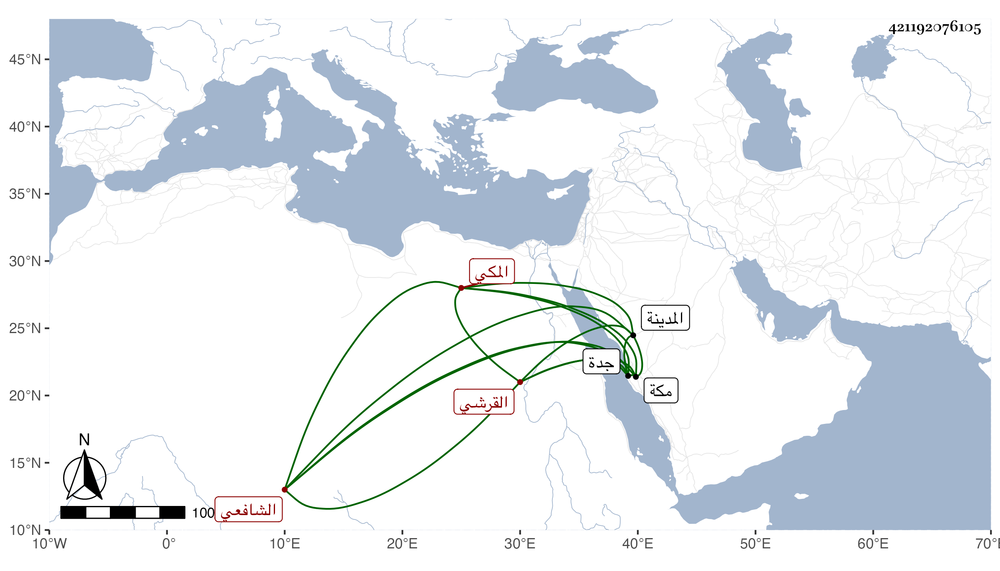

0902Sakhawi.DawLamic.ITO20230111-ara1.EIS1600.421192076105
Biography ID: 421192076105
844
محمد بن محمد بن إبرهيم بن علي بن أبي البركات محمد صلاح الدين أبو المحاسن بن الجمال أبي السعود بن البرهان بن ظهيرة القرشي المكي الشافعي الماضي أبوه وجده وأبوه وأخوه أحمد ، وأمه ابنة الجمال أبي المكارم بن النجم محمد بن ظهيرة . ولد في يوم الاثنين حادي عشري صفر سنة ثمانين بمكة وحفظ القرآن وجل محافيظ أبيه المنهاج وجمع الجوامع والألفيتين والتلخيص واشتغل على أبيه وفهم وتيقظ وسمع مني في سنة ست وثمانين وبعدها أشياء ثم قرأ علي في سنة سبع وتسعين الشفا ومؤلفي في ختمه ولازمني وتوجه مع أبيه قبل ذلك لزيارة المدينة النبوية وسمع على أبي عبد الله محمد بن أبي الفرج المراغي في الشفا وغيره وعلى أم حبيبة زينب ابنة الشوبكي ما سلف في أخيه البهاء أحمد وأكثر عن أبيه في الرواية والدراية وزوجه سبطة عمته ابنة الزيني عبد الباسط وكان المهم في أوائل سنة سبع وتسعين حافلا وتمرن في النحو بالشمس الزعيفريني ولازم إسمعيل بن أبي يزيد في العربية والفقه وغيرهما وقرأ على الوزيري وحضر عن أبيه في مشيخة الجمالية وكذا خطب بجدة ، وهو شديد الحياء زائد الوقار أرجو فيه الخير .
